Introduction to hermes
Daniel Sabanés Bové
daniel.sabanes_bove@roche.comNamrata Bhatia
Stefanie Bienert
Benoit Falquet
Haocheng Li
Jeff Luong
Lyndsee Midori Zhang
Simona Rossomanno
Tim Treis
Mark Yan
Naomi Chang
Chendi Liao
Carolyn Zhang
Joseph N. Paulson
Source:vignettes/introduction.Rmd
introduction.RmdAcknowledgments
hermes is a successor of the Roche internal rnaseqTools R package, and therefore many code ideas have been borrowed from it. Therefore we would like to thank the rnaseqTools authors for their work.
In particular, we would like to acknowledge Chendi Liao and Joe Paulson for their guidance and explanations during the development of hermes. We also discussed the class design with Valerie Obenchain, and discussed RNAseq data standards with Armen Karapetyan. We borrowed some ideas from the Roche internal biokitr R package and discussed them with its maintainer Daniel Marbach.
Finally, hermes originated as part of the NEST project. We are grateful for the entire team’s support.
Thanks a lot to everyone involved!
Installation
First let’s see how we can install the hermes package.
BioConductor
With the development version (3.15) of BioConductor, you can install the current package version with:
if (!require("BiocManager")) {
install.packages("BiocManager")
}
BiocManager::install("hermes")GitHub
You can install the unstable development version from GitHub with:
if (!require("devtools")) {
install.packages("devtools")
}
devtools::install_github("insightsengineering/hermes")Introduction
The hermes R package provides classes, methods and functions to import, quality-check, filter, normalize, analyze RNAseq counts data. The core functionality is built on the BioConductor ecosystem, especially SummarizedExperiment. New users should first begin by reading the “Introduction to hermes” vignette to become familiar with the hermes concepts.
vignette(topic = "introduction", package = "hermes")In this vignette you are going to learn how to:
- Import RNAseq count data into the
hermesready format. - Annotate gene information automatically from a central database (e.g. BioMart).
- Add quality control (QC) flags to genes and samples.
- Filter the data set.
- Normalize the counts.
- Quickly produce descriptive plots.
- Perform principal components analysis.
- Produce a templated QC report.
- Perform differential expression analysis.
The packages used in this vignette are:
The datasets used in this vignette are:
?expression_set
?summarized_experimentImporting Data
The data for hermes needs to be imported into the HermesData or RangedHermesData format.
Importing a SummarizedExperiment
The simplest way to import data is from a SummarizedExperiment (SE) object. This is because a HermesData object is just a special SE, with few additional requirements and slots.
In a nutshell, the object needs to have a counts assay, have certain gene and sample variables, and have unique row and column names. The row names, i.e. the gene names, must start with a common prefix GeneID or ENSG to enable easy annotations. See ?HermesData for the detailed requirements.
When the SE follows the minimum conventions, we can just call the HermesData constructor on it:
object <- HermesData(summarized_experiment)And we have a HermesData object.
object
#> class: HermesData
#> assays(1): counts
#> genes(5085): GeneID:11185 GeneID:10677 ... GeneID:9087 GeneID:9426
#> additional gene information(12): HGNC HGNCGeneName ... chromosome_name
#> LowExpressionFlag
#> samples(20): 06520011B0023R 06520067C0018R ... 06520015C0016R
#> 06520019C0023R
#> additional sample information(74): Filename SampleID ... LowDepthFlag
#> TechnicalFailureFlagNote that in this case deprecated names were used for the rowData and colData variables, therefore they appear under “additional” gene and sample information. However we can still call the default constructor because the new names will be filled with missing values, e.g.:
head(annotation(object))
#> DataFrame with 6 rows and 4 columns
#> symbol desc chromosome size
#> <logical> <logical> <logical> <logical>
#> GeneID:11185 NA NA NA NA
#> GeneID:10677 NA NA NA NA
#> GeneID:101928428 NA NA NA NA
#> GeneID:100422835 NA NA NA NA
#> GeneID:102466731 NA NA NA NA
#> GeneID:64881 NA NA NA NAIf we want to map old column names to new column names to avoid duplication with new missing value columns, we can do this using the rename() method. For example here:
object <- summarized_experiment %>%
rename(
row_data = c(
symbol = "HGNC",
desc = "HGNCGeneName",
chromosome = "Chromosome",
size = "WidthBP",
low_expression_flag = "LowExpressionFlag"
),
col_data = c(
low_depth_flag = "LowDepthFlag",
technical_failure_flag = "TechnicalFailureFlag"
)
) %>%
HermesData()For example we can now see in the annotations that we successfully carried over the information since we mapped the old annotations to the new required names above:
head(annotation(object))
#> DataFrame with 6 rows and 4 columns
#> symbol desc chromosome size
#> <character> <character> <character> <integer>
#> GeneID:11185 INMT indolethylamine N-me.. 7 5468
#> GeneID:10677 AVIL advillin 12 18694
#> GeneID:101928428 LOC101928428 RNA-binding protein .. GL000220.1 138
#> GeneID:100422835 MIR3183 microRNA 3183 17 84
#> GeneID:102466731 MIR6769A microRNA 6769a 16 73
#> GeneID:64881 PCDH20 protocadherin 20 13 5838For a bit more details we can also call summary() on the object.
summary(object)
#> HermesData object with 20 samples of 5085 genes.
#> - Library sizes across samples: mean 5476759, median 5365970, range 4632496 to 7262374
#> - Included assays (1): counts
#> - Additional gene information (7): GeneID StartBP ... SYMBOL
#> chromosome_name
#> - Additional sample information (73): Filename SampleID ... STDSSDY
#> technical_failure_flag
#> - Low expression genes (3021): GeneID:10677 GeneID:101928428 ...
#> GeneID:9084 GeneID:9426
#> - Samples with too low depth or technical failures (20): NA NA ... NA
#> NAFor the below, let’s use the already prepared HermesData object.
object <- hermes_data
Importing an ExpressionSet
If we start from an ExpressionSet, we can first convert it to a RangedSummarizedExperiment and then import it to RangedHermesData:
se <- makeSummarizedExperimentFromExpressionSet(expression_set)
object2 <- HermesData(se)
object2
#> class: RangedHermesData
#> assays(1): counts
#> genes(5085): GeneID:11185 GeneID:10677 ... GeneID:9087 GeneID:9426
#> additional gene information(12): HGNC HGNCGeneName ... chromosome_name
#> LowExpressionFlag
#> samples(20): 06520011B0023R 06520067C0018R ... 06520015C0016R
#> 06520019C0023R
#> additional sample information(74): Filename SampleID ... LowDepthFlag
#> TechnicalFailureFlagImporting a Matrix
In general we can also import a matrix of counts. We just have to pass the required gene and sample information as data frames to the constructor.
counts_matrix <- assay(hermes_data)
object3 <- HermesDataFromMatrix(
counts = counts_matrix,
rowData = rowData(hermes_data),
colData = colData(hermes_data)
)
object3
#> class: HermesData
#> assays(1): counts
#> genes(5085): GeneID:11185 GeneID:10677 ... GeneID:9087 GeneID:9426
#> additional gene information(3): GeneID SYMBOL chromosome_name
#> samples(20): 06520011B0023R 06520067C0018R ... 06520015C0016R
#> 06520019C0023R
#> additional sample information(72): Filename SampleID ... TTYPE STDSSDY
identical(object, object3)
#> [1] TRUENote that we can easily access the counts assay (matrix) in the final object with counts():
cnts <- counts(object)
cnts[1:3, 1:3]
#> 06520011B0023R 06520067C0018R 06520063C0043R
#> GeneID:11185 3 66 35
#> GeneID:10677 1668 236 95
#> GeneID:101928428 0 0 0Annotations
hermes provides a modular approach for querying gene annotations, in order to allow for future extensions in this or other downstream packages.
Connection to Database
The first step is to connect to a database. In hermes the only option is currently databases that utilize the BioMart software suite. However due to the generic function design, it is simple to extend hermes with other data base connections.
In order to save time during vignette build, we zoom in here on a subset of the original object containing only the first 10 genes.
small_object <- object[1:10, ]The corresponding function takes the common gene ID prefix as argument to determine the format of the gene IDs and the filter variable to use in the query later on.
httr::set_config(httr::config(ssl_verifypeer = 0L))
connection <- connect_biomart(prefix(small_object))Here we are using the prefix() method to access the prefix saved in the HermesData object.
Querying and Saving Annotations
Then the second step is to query the gene annotations and save them in the object.
annotation(small_object) <- query(genes(small_object), connection)Here we are using the genes() method to access the gene IDs (row names) of the HermesData object. Note that not all genes might be found in the data base and the corresponding rows would then be NA in the annotations.
Quality Control Flags
hermes provides automatic gene and sample flagging, as well as manual sample flagging functionality.
Automatic Gene and Sample Flagging
For genes, it is counted how many samples don’t pass a minimum expression CPM (counts per million reads mapped) threshold. If too many, then this gene is flagged as a “low expression” gene.
For samples, two flags are provided. The “technical failure” flag is based on the average Pearson correlation with other samples. The “low depth” flag is based on the library size, i.e. the total sum of counts for a sample across all genes.
Thresholds for the above flags can be initialized with control_quality(), and the flags are added with add_quality_flags().
my_controls <- control_quality(min_cpm = 10, min_cpm_prop = 0.4, min_corr = 0.4, min_depth = 1e4)
#> Loading required namespace: testthat
object_flagged <- add_quality_flags(object, control = my_controls)Manual Sample Flagging
Sometimes it is necessary to manually flag certain samples as technical failures, e.g. after looking at one of the analyses discussed below. This is possible, too.
object_flagged <- set_tech_failure(object_flagged, sample_ids = "06520011B0023R")Accessing Flags
All flags have access functions.
head(get_tech_failure(object_flagged))
#> 06520011B0023R 06520067C0018R 06520063C0043R 06520105C0017R 06520092C0017R
#> TRUE FALSE FALSE FALSE FALSE
#> 06520103C0017R
#> FALSE
head(get_low_depth(object_flagged))
#> 06520011B0023R 06520067C0018R 06520063C0043R 06520105C0017R 06520092C0017R
#> FALSE FALSE FALSE FALSE FALSE
#> 06520103C0017R
#> FALSE
head(get_low_expression(object_flagged))
#> GeneID:11185 GeneID:10677 GeneID:101928428 GeneID:100422835
#> TRUE FALSE TRUE TRUE
#> GeneID:102466731 GeneID:64881
#> TRUE TRUEFiltering Data
We can either filter based on the default QC flags, or based on custom variables from the gene or sample information.
Based on Default QC Flags
This is simple with the filter() function. It is also possible to selectively only filter the genes or the samples using the what argument.
Based on Custom Variables
This can be done with the subset() function. Genes can be filtered with the subset argument via expressions using the gene information variables, and samples can be filtered with the select argument using the sample information variables. In order to see which ones are available these can be queries first.
names(rowData(object_flagged))
#> [1] "symbol" "desc" "GeneID"
#> [4] "chromosome" "size" "SYMBOL"
#> [7] "chromosome_name" "low_expression_flag"
names(colData(object_flagged))
#> [1] "Filename" "SampleID" "AGEGRP"
#> [4] "AGE18" "STDDRS" "STDDRSD"
#> [7] "STDSSDT" "TRTDRS" "TRTDRSD"
#> [10] "BHDCIRC" "BHDCIRCU" "ADAFL"
#> [13] "BLANP" "BKPS" "BLKS"
#> [16] "BTANNER" "FRPST" "DURIDX"
#> [19] "DURSAF" "DURSUR" "LNTHRPY"
#> [22] "AENCIFL" "STUDYID" "USUBJID"
#> [25] "RFSTDTC" "RFENDTC" "RFXSTDTC"
#> [28] "RFXENDTC" "RFICDTC" "RFPENDTC"
#> [31] "DTHDTC" "DTHFL" "SITEID"
#> [34] "INVID" "AGE" "AGEU"
#> [37] "SEX" "RACE" "ETHNIC"
#> [40] "ARMCD" "ARM" "ACTARMCD"
#> [43] "ACTARM" "COUNTRY" "DMDTC"
#> [46] "DMDY" "BAGE" "BAGEU"
#> [49] "BWT" "BWTU" "BHT"
#> [52] "BHTU" "BBMI" "ITTFL"
#> [55] "SAFFL" "INFCODT" "RANDDT"
#> [58] "TRTSDTC" "TRTSDTM" "TRTSTMF"
#> [61] "TRTEDTM" "TRTETMF" "TRTDUR"
#> [64] "DISCSTUD" "DISCDEAT" "DISCAE"
#> [67] "DISTRTFL" "AEWITHFL" "ALIVDT"
#> [70] "COHORT" "TTYPE" "STDSSDY"
#> [73] "low_depth_flag" "tech_failure_flag"
head(rowData(object_flagged)$chromosome)
#> [1] "7" "12" "GL000220.1" "17" "16"
#> [6] "13"
head(object_flagged$ARMCD)
#> [1] "COH1" "COH1" "COH8" "COH12" "COH9O" "COH9E"
object_flagged_subsetted <- subset(
object_flagged,
subset = chromosome == "5",
select = ARMCD == "COH1"
)Normalizing Counts
Normalizing counts within samples (CPM), genes (RPKM) or across both (TPM) can be achieved with the normalize() function. The normalize() function can also transform the counts by the variance stabilizing transformation (vst) and the regularized log transformation (rlog) as proposed in the DESeq2 package.
object_normalized <- normalize(object_flagged_filtered)
#> -- note: fitType='parametric', but the dispersion trend was not well captured by the
#> function: y = a/x + b, and a local regression fit was automatically substituted.
#> specify fitType='local' or 'mean' to avoid this message next time.
object_rlog_normalized <- normalize(object_flagged_filtered, "rlog")
#> -- note: fitType='parametric', but the dispersion trend was not well captured by the
#> function: y = a/x + b, and a local regression fit was automatically substituted.
#> specify fitType='local' or 'mean' to avoid this message next time.The corresponding assays are saved in the object and can be accessed with assay().
assay(object_normalized, "tpm")[1:3, 1:3]
#> 06520067C0018R 06520063C0043R 06520105C0017R
#> GeneID:10677 4.096418 3.323016 7.714990
#> GeneID:286205 2.985506 3.182624 3.769962
#> GeneID:8365 11.711741 12.421108 12.466491
assay(object_rlog_normalized, "rlog")[1:3, 1:3]
#> 06520067C0018R 06520063C0043R 06520105C0017R
#> GeneID:10677 8.101651 7.153488 10.281393
#> GeneID:286205 10.101287 9.859074 10.104426
#> GeneID:8365 10.023097 10.163191 9.935722The used control settings can be accessed afterwards from the metadata of the object:
metadata(object_normalized)
#> $control_quality_flags
#> $control_quality_flags$min_cpm
#> [1] 10
#>
#> $control_quality_flags$min_cpm_prop
#> [1] 0.4
#>
#> $control_quality_flags$min_corr
#> [1] 0.4
#>
#> $control_quality_flags$min_depth
#> [1] 10000
#>
#>
#> $control_normalize
#> $control_normalize$log
#> [1] TRUE
#>
#> $control_normalize$lib_sizes
#> NULL
#>
#> $control_normalize$prior_count
#> [1] 1
#>
#> $control_normalize$fit_type
#> [1] "parametric"Note that also the filtering settings are saved in here. For custom normalization options, use control_normalize(). For example, to not use log scale but the original scale of the counts:
object_normalized_original <- normalize(
object_flagged_filtered,
control = control_normalize(log = FALSE)
)
#> -- note: fitType='parametric', but the dispersion trend was not well captured by the
#> function: y = a/x + b, and a local regression fit was automatically substituted.
#> specify fitType='local' or 'mean' to avoid this message next time.
assay(object_normalized_original, "tpm")[1:3, 1:3]
#> 06520067C0018R 06520063C0043R 06520105C0017R
#> GeneID:10677 16.105854 9.007544 209.1084
#> GeneID:286205 6.920033 8.079569 12.6418
#> GeneID:8365 3353.172671 5483.360511 5658.6256Descriptive Plots
Simple Plots
A series of simple descriptive plots can be obtained by just calling autoplot() on an object.
autoplot(object)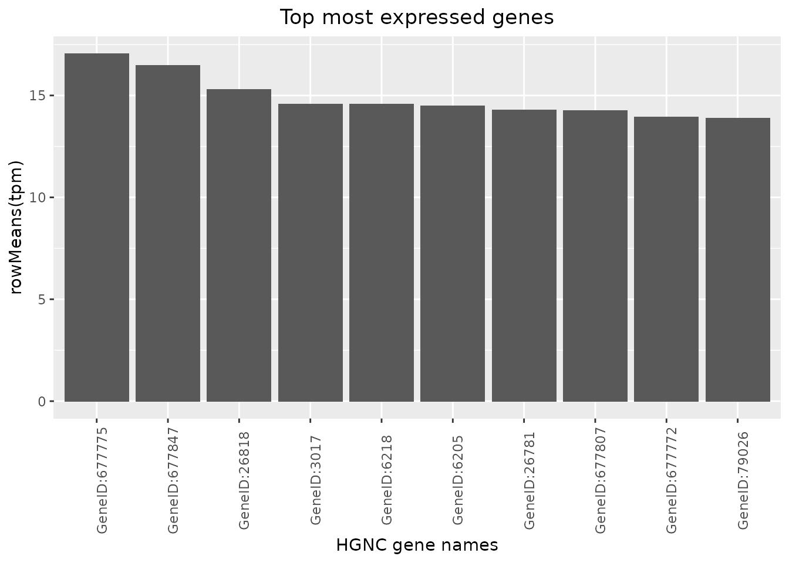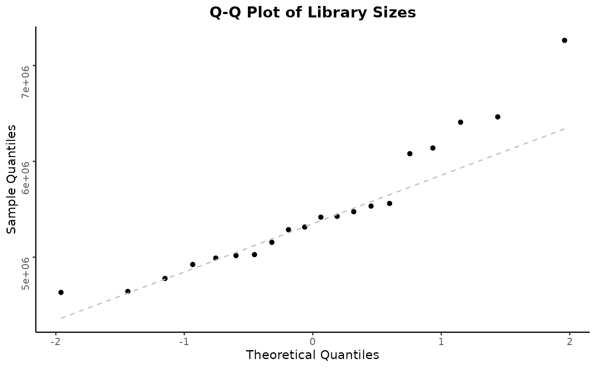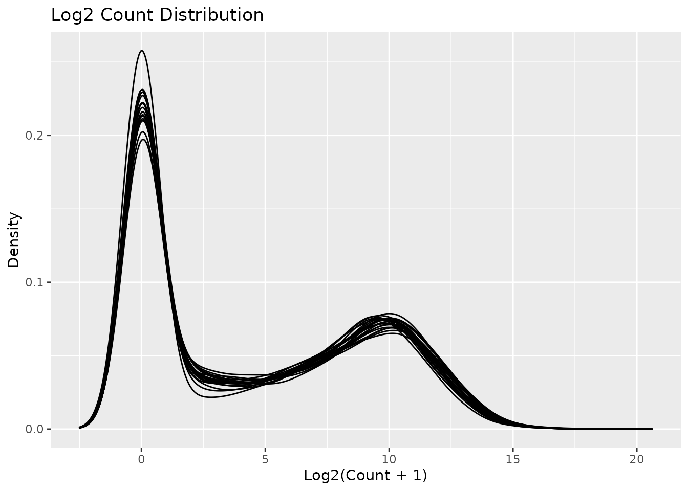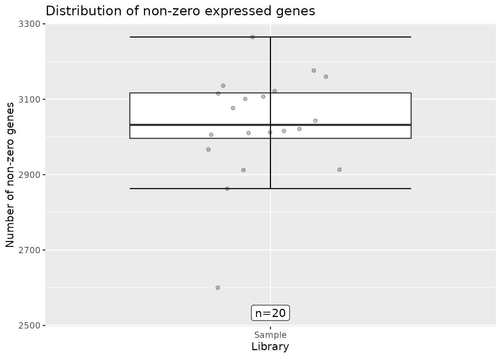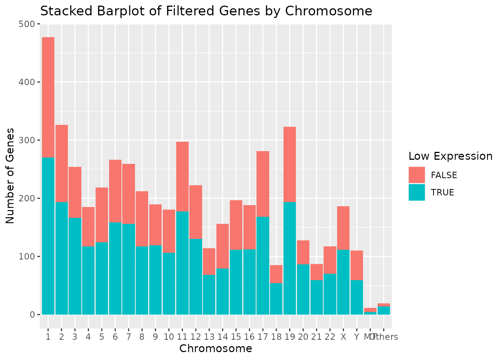
Note that individual plots from these can be produced with the series of draw_*() functions, see ?plot_all for the detailed list. Then, these can be customized further. For example, we can change the number and color of the bins in the library size histogram:
draw_libsize_hist(object, bins = 10L, fill = "blue")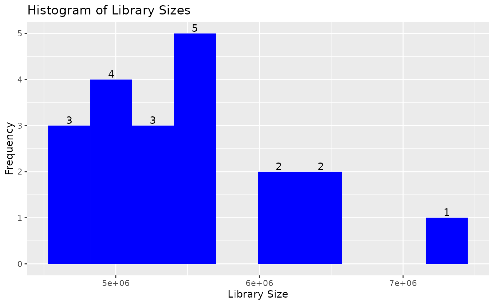
Top Genes
Top genes can be calculated and visualized in a barplot.
By passing another summary function, also the variability can be ranked for example.

Correlation between Samples
A sample correlation matrix between samples can be obtained with the correlate() function. This can be visualized in a heatmap using autoplot() again. See ?calc_cor for detailed options.
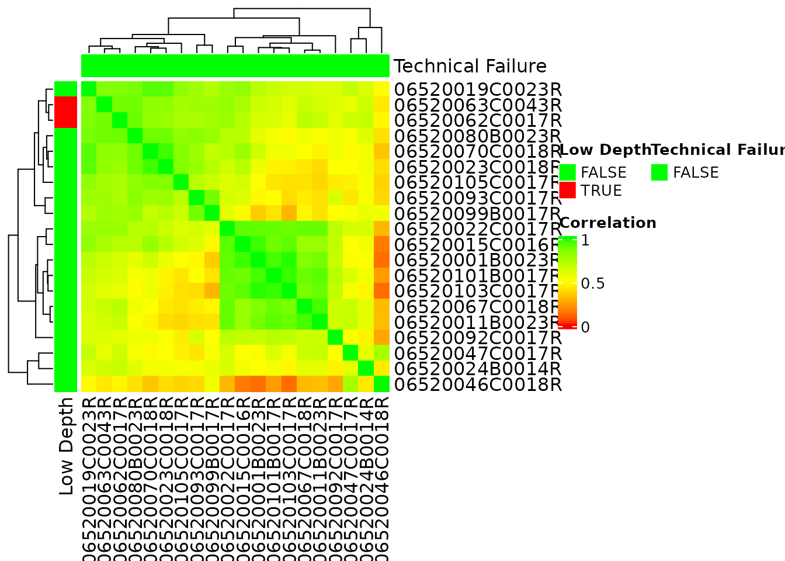
Principal Components
Let’s see how we can perform Principal Components Analysis (PCA).
PCA of Samples
PCA can be performed with calc_pca(). The result can be summarized or plotted.
pca_res <- calc_pca(object_normalized, assay_name = "tpm")
summary(pca_res)$importance
#> PC1 PC2 PC3 PC4 PC5 PC6
#> Standard deviation 22.08095 17.34762 15.19930 12.80689 11.76153 10.48121
#> Proportion of Variance 0.24066 0.14854 0.11403 0.08096 0.06828 0.05422
#> Cumulative Proportion 0.24066 0.38919 0.50322 0.58418 0.65246 0.70668
#> PC7 PC8 PC9 PC10 PC11 PC12
#> Standard deviation 9.812505 8.950926 8.530826 8.196006 7.905973 7.216002
#> Proportion of Variance 0.047520 0.039550 0.035920 0.033160 0.030850 0.025700
#> Cumulative Proportion 0.754200 0.793750 0.829670 0.862830 0.893680 0.919380
#> PC13 PC14 PC15 PC16 PC17
#> Standard deviation 6.92755 6.532485 5.501383 5.151959 3.983283 2.302918e-14
#> Proportion of Variance 0.02369 0.021060 0.014940 0.013100 0.007830 0.000000e+00
#> Cumulative Proportion 0.94307 0.964130 0.979070 0.992170 1.000000 1.000000e+00
autoplot(pca_res)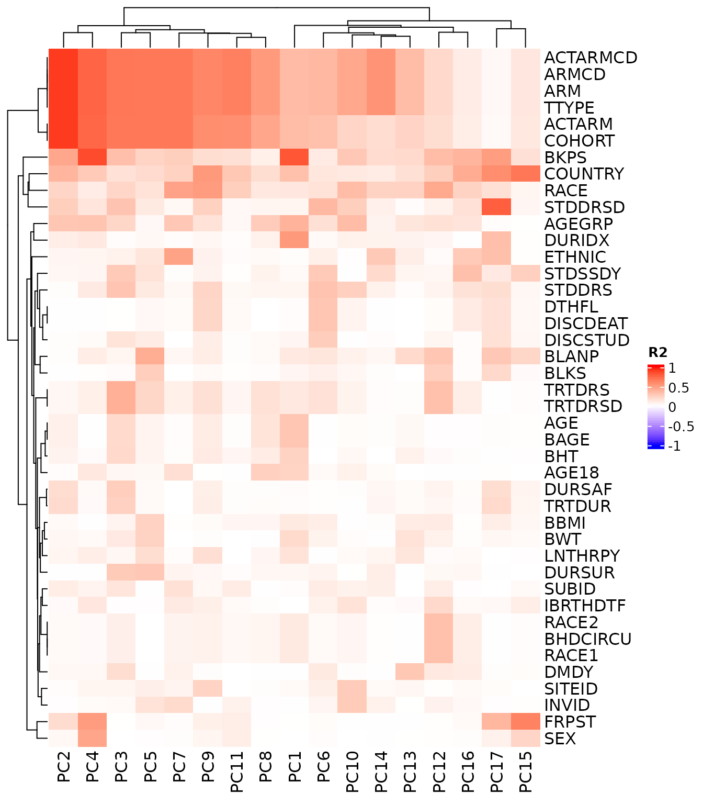
Note that various options are available for the plot, for example we can look at different principal components, and color the samples by sample variables. See ?ggfortify::autoplot.prcomp for details.
autoplot(
pca_res,
x = 2, y = 3,
data = as.data.frame(colData(object_normalized)), colour = "SEX"
)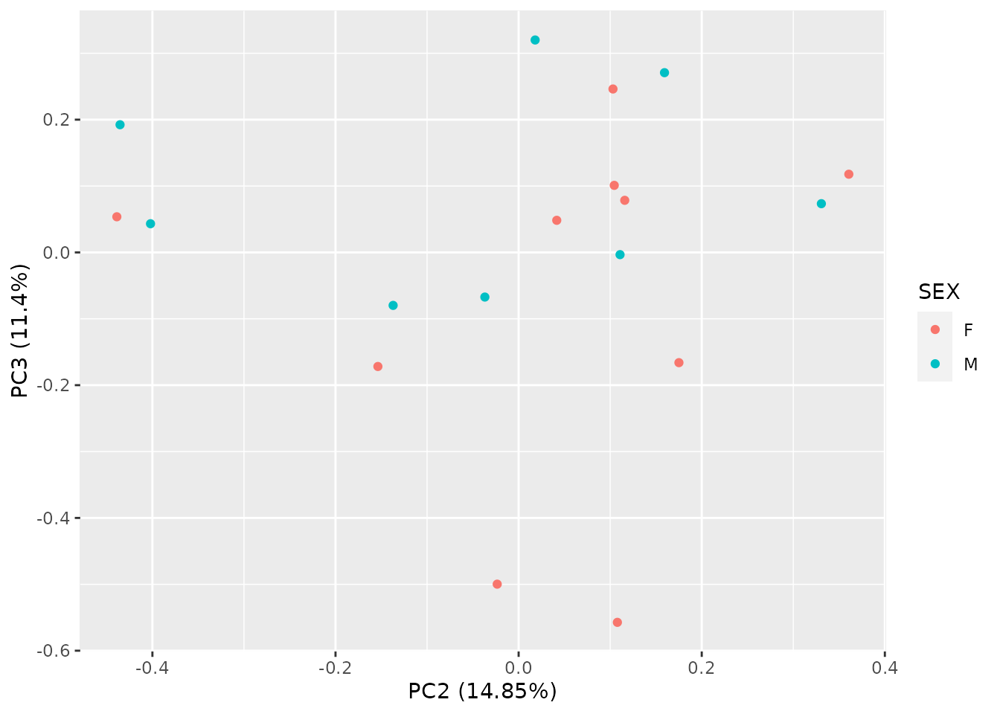
Correlation with Sample Variables
Subsequently it is easy to correlate the obtained principal components with the sample variables. We obtain a matrix of R-squared (R2) values for all combinations, which can again be visualized as a heatmap. See ?pca_cor_samplevar for details.
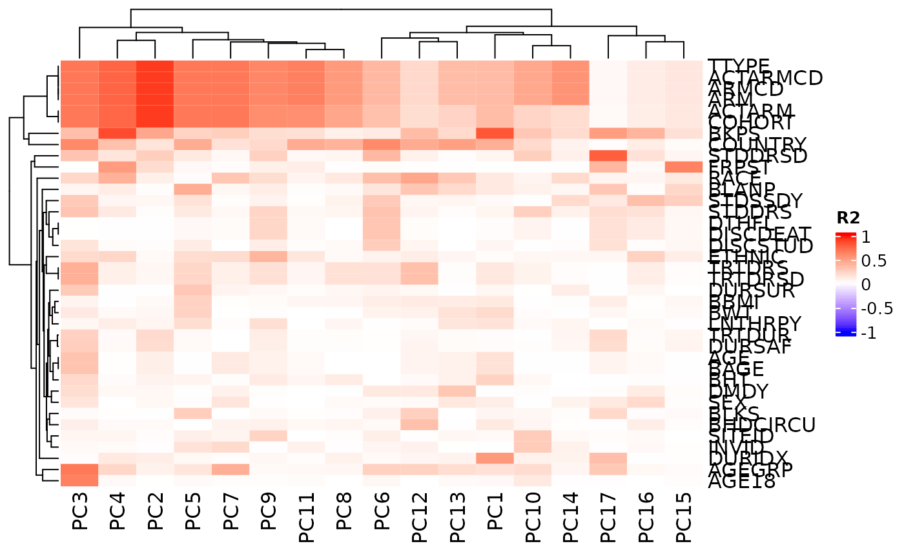
QC Report Template
In order to quickly obtain a quality control report for a new RNAseq data set, you can proceed as follows.
- Save your input
SummarizedExperimentusing R’ssave()function in a binary data file (e.g. ending with.rdasuffix). - Load the
hermespackage in RStudio and click on:File>New File>R Markdown>From Templateand select the QC report template fromhermes.
- Fill in the few parameters in the yaml header, including the required file paths for the input file from above, and where the resulting
HermesDataobject should be saved. - Knit the document.
The report contains the above mentioned descriptive plots and PCA analyses and can be a useful starting point for your analysis.
Differential Expression
In addition to the above QC analyses, simple differential expression analysis is supported by hermes. In addition to the filtered object (normalization of counts is not required) the variable name of the factor to contrast the samples needs to be provided to diff_expression().
colData(object) <- df_cols_to_factor(colData(object))
diff_res <- diff_expression(object, group = "SEX", method = "voom")
head(diff_res)
#> log2_fc stat p_val adj_p_val
#> GeneID:8000 -2.3200712 -4.239244 0.0004209192 0.9118348
#> GeneID:51227 -1.0467295 -4.032550 0.0006788432 0.9118348
#> GeneID:344558 1.6896266 3.824046 0.0010993677 0.9118348
#> GeneID:51575 -0.7760844 -3.746293 0.0013155805 0.9118348
#> GeneID:151242 -3.4358998 -3.570103 0.0019741997 0.9118348
#> GeneID:8904 -0.6100354 -3.542864 0.0021017199 0.9118348Note that we use here the utility function df_cols_to_factor() which converts by default all character and logical variables to factor variables. This is one possible way here to ensure that the utilized group variable is a factor.
Afterwards a standard volcano plot can be produced.
autoplot(diff_res, log2_fc_thresh = 8)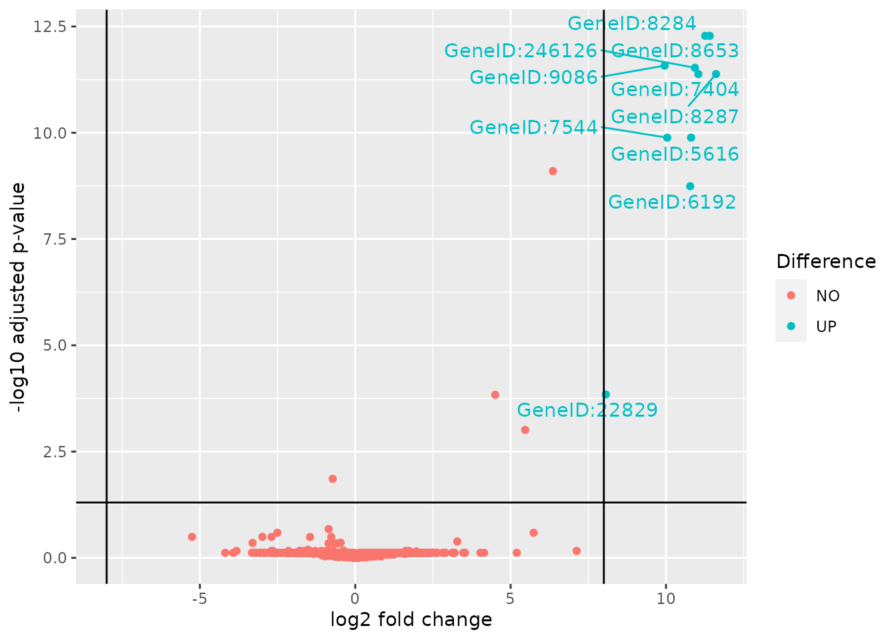
Summary
The hermes R package provides classes, methods and functions to import, quality-check, filter, normalize and analyze RNAseq counts data. In particular, the robust object-oriented framework allows for easy extensions in the future to address user feature requests. These and other feedback are very welcome - thank you very much in advance for your thoughts on hermes!
Session Info
Here is the output of sessionInfo() on the system on which this document was compiled running pandoc 2.14.0.3:
#> R version 4.1.2 (2021-11-01)
#> Platform: x86_64-pc-linux-gnu (64-bit)
#> Running under: Ubuntu 20.04.3 LTS
#>
#> Matrix products: default
#> BLAS/LAPACK: /usr/lib/x86_64-linux-gnu/openblas-pthread/libopenblasp-r0.3.8.so
#>
#> locale:
#> [1] LC_CTYPE=en_US.UTF-8 LC_NUMERIC=C
#> [3] LC_TIME=en_US.UTF-8 LC_COLLATE=en_US.UTF-8
#> [5] LC_MONETARY=en_US.UTF-8 LC_MESSAGES=C
#> [7] LC_PAPER=en_US.UTF-8 LC_NAME=C
#> [9] LC_ADDRESS=C LC_TELEPHONE=C
#> [11] LC_MEASUREMENT=en_US.UTF-8 LC_IDENTIFICATION=C
#>
#> attached base packages:
#> [1] stats4 stats graphics grDevices utils datasets methods
#> [8] base
#>
#> other attached packages:
#> [1] hermes_0.99.2.9004 SummarizedExperiment_1.24.0
#> [3] Biobase_2.54.0 GenomicRanges_1.46.1
#> [5] GenomeInfoDb_1.30.0 IRanges_2.28.0
#> [7] S4Vectors_0.32.3 BiocGenerics_0.40.0
#> [9] MatrixGenerics_1.6.0 matrixStats_0.61.0
#> [11] ggfortify_0.4.13 ggplot2_3.3.5
#> [13] BiocStyle_2.20.2
#>
#> loaded via a namespace (and not attached):
#> [1] colorspace_2.0-2 rjson_0.2.20
#> [3] EnvStats_2.4.0 ellipsis_0.3.2
#> [5] rprojroot_2.0.2 circlize_0.4.13
#> [7] XVector_0.34.0 GlobalOptions_0.1.2
#> [9] fs_1.5.0 clue_0.3-60
#> [11] farver_2.1.0 waldo_0.3.1
#> [13] MultiAssayExperiment_1.20.0 ggrepel_0.9.1
#> [15] bit64_4.0.5 AnnotationDbi_1.56.2
#> [17] fansi_0.5.0 xml2_1.3.2
#> [19] splines_4.1.2 codetools_0.2-18
#> [21] doParallel_1.0.16 cachem_1.0.6
#> [23] geneplotter_1.72.0 knitr_1.36
#> [25] jsonlite_1.7.2 annotate_1.72.0
#> [27] cluster_2.1.2 dbplyr_2.1.1
#> [29] png_0.1-7 BiocManager_1.30.16
#> [31] compiler_4.1.2 httr_1.4.2
#> [33] backports_1.4.0 assertthat_0.2.1
#> [35] Matrix_1.3-4 fastmap_1.1.0
#> [37] limma_3.50.0 htmltools_0.5.2
#> [39] prettyunits_1.1.1 tools_4.1.2
#> [41] gtable_0.3.0 glue_1.5.0
#> [43] GenomeInfoDbData_1.2.7 dplyr_1.0.7
#> [45] rappdirs_0.3.3 Rcpp_1.0.7
#> [47] jquerylib_0.1.4 pkgdown_1.6.1
#> [49] vctrs_0.3.8 Biostrings_2.62.0
#> [51] iterators_1.0.13 xfun_0.28
#> [53] stringr_1.4.0 rbibutils_2.2.4
#> [55] testthat_3.1.0 lifecycle_1.0.1
#> [57] XML_3.99-0.8 edgeR_3.36.0
#> [59] zlibbioc_1.40.0 scales_1.1.1
#> [61] ragg_1.2.0 hms_1.1.1
#> [63] parallel_4.1.2 RColorBrewer_1.1-2
#> [65] ComplexHeatmap_2.10.0 yaml_2.2.1
#> [67] curl_4.3.2 memoise_2.0.1
#> [69] gridExtra_2.3 sass_0.4.0
#> [71] biomaRt_2.50.1 stringi_1.7.5
#> [73] RSQLite_2.2.8 highr_0.9
#> [75] genefilter_1.76.0 desc_1.4.0
#> [77] foreach_1.5.1 checkmate_2.0.0
#> [79] filelock_1.0.2 BiocParallel_1.28.2
#> [81] shape_1.4.6 Rdpack_2.1.2
#> [83] rlang_0.4.12 pkgconfig_2.0.3
#> [85] systemfonts_1.0.3 bitops_1.0-7
#> [87] evaluate_0.14 lattice_0.20-45
#> [89] purrr_0.3.4 labeling_0.4.2
#> [91] bit_4.0.4 tidyselect_1.1.1
#> [93] DESeq2_1.34.0 magrittr_2.0.1
#> [95] bookdown_0.24 R6_2.5.1
#> [97] generics_0.1.1 DelayedArray_0.20.0
#> [99] DBI_1.1.1 pillar_1.6.4
#> [101] withr_2.4.2 survival_3.2-13
#> [103] KEGGREST_1.34.0 RCurl_1.98-1.5
#> [105] tibble_3.1.6 crayon_1.4.2
#> [107] utf8_1.2.2 BiocFileCache_2.2.0
#> [109] rmarkdown_2.11 GetoptLong_1.0.5
#> [111] progress_1.2.2 locfit_1.5-9.4
#> [113] grid_4.1.2 blob_1.2.2
#> [115] forcats_0.5.1 digest_0.6.28
#> [117] xtable_1.8-4 tidyr_1.1.4
#> [119] textshaping_0.3.6 munsell_0.5.0
#> [121] bslib_0.3.1